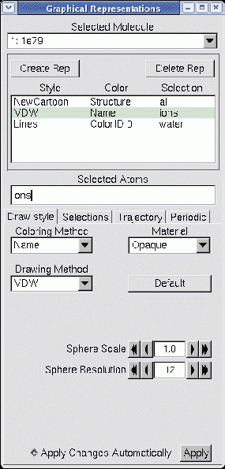
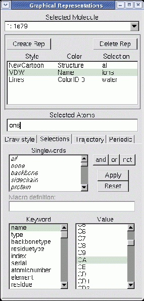

Next: Labels Window
Up: Description of each VMD
Previous: Display Menu and Display
Contents
Index
Subsections
Graphics Window
The Graphical Representations or ``Graphics'' window controls how
molecules are drawn. Molecules are represented by reps,
which are defined by four main parameters: the
selection, the
drawing method, the
coloring method,
and the material.
The selection determines which part of the
molecule is drawn, the drawing method defines which graphical
representation is used, the coloring method gives the the color
of each part of the representation, and the material determines
the effects of lighting, shading, and transparency on the representation.
Figure 5.6:
The Graphics window (in Draw Style mode)
|  |
Select a molecule for editing using the `Selected Molecule' chooser
at the top of the window. The browser below this chooser lists the
reps available for the molecule. Each line of the browser summarizes
information about the drawing method, the coloring method, and the
selection. Below this browser, choosers and a text input filed reflect
the current state of the rep, and provide controls for changing the
properties of the rep. Each drawing method has specific controls
which will appear when it is selected.
When the `ColorID' coloring method is selected,
a text entry box is shown allowing you to specify the index of a color
to use for the selection, which may be a number from 0 to 16.
Changing a rep.
To change a representation, select it in the representation browser.
The atom selection for that rep will
appear in the Selected Atoms text area and the controls will update
to reflect the current settings. Changing the settings will immediately
affect the displayed representation if the
Apply Changes Automatically check box is selected.
When it is disabled updates will only occur when the Apply button
is pressed.
Changing the drawing method brings up method-specific controls and defaults.
If you go back to the previous draw style,
VMD restores any changes that you may have made to the settings.
Pressing the Default button will restore the default settings.
The display will be updated after every change.
Adding a rep.
To add a new representation of the molecule,
enter the selection into the Atom Selection text area (or keep what is
there) and press Create Rep. This adds the representation to the
currently selected molecule.
Deleting a rep.
To delete a representation,
select the representation in the browser and press the Delete button.
Bear in mind that this does not delete the molecule, it only deletes
one of its graphical representations.
Hiding a rep.
To hide a rep, double-click its entry in the browser.
The text will turn pink to indicate that the rep is hidden.
Turn the rep back on by double-clicking again on the same line.
Hidden reps will not recalculate their geometry if the
animation frame changes until the rep is turned back on.
Selections Tab
Figure 5.7:
The Graphics window (in Selections mode)
|  |
The Selections tab
provides access to
browsers which display the lists of atom names, residue names, and so
forth for the selected molecule.
When the Selections tab is pressed, several browsers
appear in place of the drawing and coloring method controls.
These are used to list the available keywords, macros, and values for use in
selecting atoms for the associated representation.
The top browser lists singlewords and macros such as all, water,
and hydrophobic.
The botton left browser contains a list of the keywords and functions
understood by the
selection command.
If a keyword is selected which can take on a value (for instance, name and index), then the possible names will be displayed in
the bottom-rightmost browser. The functions can be
identified by the ( to the right of the name. After selecting a
keyword, the right browser will display all the names associated with the
keyword. For example, selecting resname in the left browser will show
all the three-letter residue names known for the selected molecule.
Clicking on a field in the value browser will add it to the selection
text field. Double clicking a keyword field adds the keyword
to the text field. Press Apply to actually change the atom selection
for the current rep. Press Reset to restore the atom selection to
its original value.
The Selections tab also shows the atom selection macros that have
been defined. These macros let you define a commonly used atom selection
as a single word so that it can be inserted into a rep more
conveniently. Atom selection macros can currently be defined only through the
Tcl or
Python
text interfaces; see these sections for details.
Selection and Color auto-update.
When an atom selection such as water within 3 of protein is made, the
atoms in the selection are computed for the current animation frame. When the
animation frame changes, the selection is not normally recalculated; thus the
displayed atoms may not correspond to those that would be selected if the atom
selection were performed for the new animation frame. If the Update
Selection Every Frame checkbox is highlighted by clicking on the checkbox,
then the atom selection for the current rep will be recalculated every time the
animation frame changes. Similarly, if the Update Color Every Frame
checkbox is activated, the color will be recalculated for every frame.
Several of the coloring methods available in Draw Style tab
operate over data fields that have no specifically implied range of
values. It is often useful to highlight a very specific range of data
values, in order to accomplish this the color scale range can be manually
set to a specific starting and ending values, overriding the default
behavior which is to autoscale from the minimum value to the maximum value.
This feature is particularly useful when displaying trajectories, since
the range of values of interest may be quite different from the autoscaled
range for a single frame or all frames.
Draw Multiple Frames.
Draw multiple trajectory frames or coordinate sets simultaneously.
This setting allows the user to select one or more ranges of frames
to display simultaneously. The frame specification takes one of the
following forms now, frame_number, start:end, or
start:step:end.
Trajectory Smoothing.
The Trajectory Smoothing Window Size is used to control the application
of a per-representation windowed-averaging smoothing function. This simple
smoothing feature can be used to eliminate much of the thermal noise inherent
in a molecular dynamics trajectory so that one can more easily see structural
changes occuring over a wider time scale. The window size parameter controls
how many frames are averaged together to produce the coordinates which
are actually displayed. One important consideration
when using the trajectory smoothing feature is that VMD does not take
periodic boundary conditions into consideration when smoothing trajectory
coordinates, so any atoms which wrap around within the span of the window will
cause erratic motions in the displayed representation. This can be avoided by
unwrapping trajectory coordinates prior to loading into VMD or by using atom
selections to eliminate atoms which wrap around.
Periodic Tab
The Periodic tab controls the display of periodic images of a
molecule. In order to display periodic images, a molecule must have
unit cell information set for a, b, c,
alpha, beta, and gamma, which are discussed in
section 9.3.22.
When the proper unit cell information is present, the periodic display
feature can show periodic images of the unit cell by transforming and
rendering additional copies of the structure. The current implementation
of this feature doesn't provide for complex crystallographic symmetry
operations. Unit cells that can be replicated by translation along the
three unit cell axes are the only ones supported presently. The periodic
images to be drawn are selected by enabling images in one or more of
the six faces of the unit cell. The Self image selects the
untranslated unit cell itself, so that one my render a representation
consisting of only replica images. This feature allows the unit cell
and its periodic images to be displayed using different materials, for
cases where it is desirable to draw more attention to the original unit
cell or to one ore more of the replicas. The Number of Images
counter controls how many replicas are made in each of the six directions.
Some file formats read by VMD may not include unit cell information,
in such cases you can use the scripting interface to set the unit cell
information manually. PDB files containing CRYST1 records are an
example of a file format that provides unit cell information.
Next: Labels Window
Up: Description of each VMD
Previous: Display Menu and Display
Contents
Index
vmd@ks.uiuc.edu